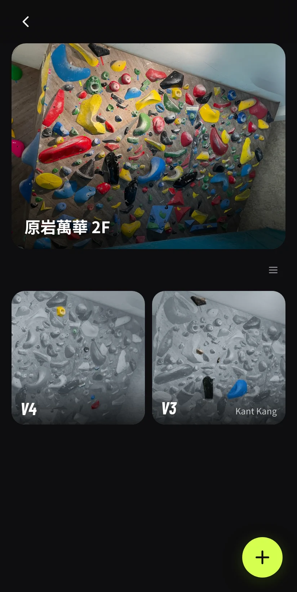

給岩館經營者
讓你的岩館 App 有看線與定線，不必自己開發
把牆面照片交給 Climbio 整理成可以點岩點的牆，再放進你現有的 App。岩友在你的 App 裡就能看線、定線；你的帳號、紀錄與資料庫都不用動。
放進去之後，你的岩館得到什麼
不用另外開發
看線與定線畫面是現成的：在 App 放一個內嵌頁（網頁用 iframe，原生 App 用 WebView），告訴它牆的 id，就完成。
更新牆面，就是上傳一張照片
工作人員在你的後台選一張牆面照片，瀏覽器裡直接偵測岩點，按發佈就有一面互動牆。想要更精準，可以讓 AI Agent 照 Studio 的流程精修。
岩友在別處也找得到你
你的牆同時出現在岩點貓的「找牆面」，路線在你的 App 與岩點貓都看得到，不必各維護一份。
你的使用者與紀錄不用動
Climbio 只放牆面與路線。使用者怎麼對應路線、完攀紀錄、留言，全由你的 App 決定；提交路線以你的網站為身分，不需要另外申請金鑰。
實際看看
這是放進岩館 App 的定線畫面：點牆上的岩點，就能定出一條路線（示範用，不會儲存）。看線是同一個內嵌頁，只差在模式。
點一下才會載入（照片約 2 MB）

怎麼做
- AI Agent 幫你接好：後台放「牆面照片」內嵌頁，路線頁放看線、定線內嵌頁。
- 工作人員上傳牆面照片：像更新原本的照片一樣，偵測岩點、按發佈，App 存回傳的牆 id。換新照片就是新的一面牆。
- 使用者定線：定完按提交，路線就公開在這面牆；你的 App 記下回傳的路線 id，對應你自己的使用者。
複製給 AI Agent
貼給你平常用的 AI Agent（Claude、ChatGPT、Codex 都可以）。它讀完整份流程後，會一次把需要你提供的資料列成清單問你，你回答就好。
請先閱讀 https://github.com/climb-io/climbio/blob/main/docs/gym-onboarding.md ，照裡面的流程幫我們岩館整合 Climbio。一開始請把需要我提供的資料一次列成清單問我，不要分很多次問；我答不出來的，請給我選項和建議，不要自己編造。技術細節都在 GitHub，AI Agent 會自己讀：